Apply Kirchhoff’s voltage law at node voltage.
Substitute for .
.
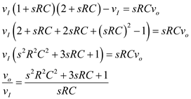
Draw the feedback network of the circuit shown in Figure P17.13 in the text book.
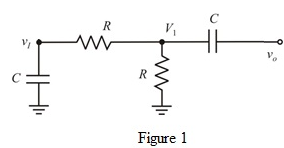
Apply Kirchhoff’s voltage law at node voltage.
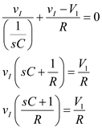
…… (1)
Apply Kirchhoff’s voltage law at node voltage.
Substitute for.
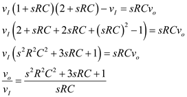
Determine the expression for the feedback factor .
.
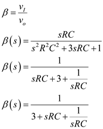
Substitute 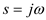.
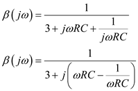
Find the frequency for zero loop phase.
Equate the imaginary part of 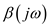to zero for zero loop phase.
Thus, the frequency for zero loop phase is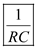.
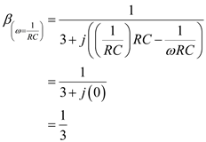
The gain of the non-inverting op-amp is,
Write the expression for the condition for oscillations.
Substitute  for
for  and
and  for
for .
.

Thus, for oscillations is 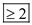.
Write the expression for the loop gain .
.
.
Substitute  for
for  and 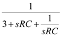 for 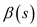.
and 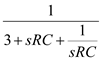 for 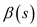.
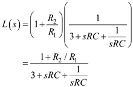
Thus, the expression of  is .
is .
Substitute  for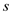 in the expression of 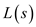.
for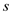 in the expression of 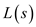.
Thus, the expression of  is .
is .